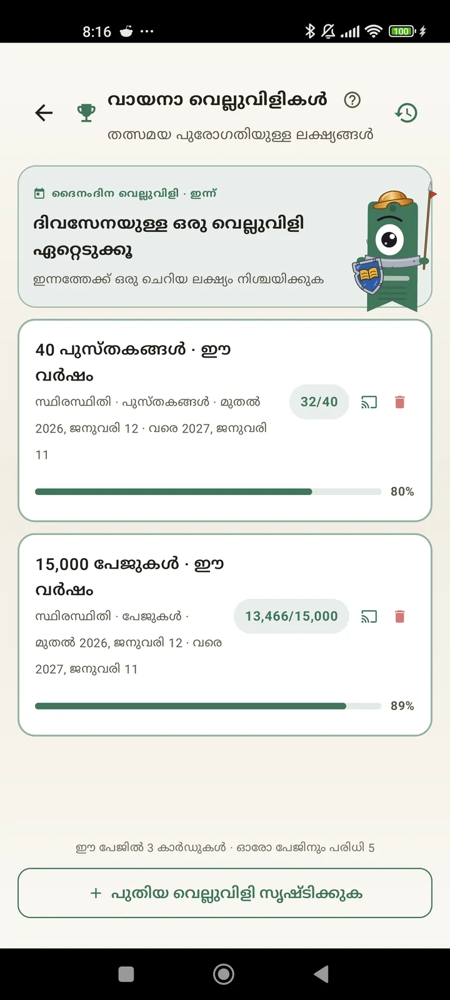

ഒരു വായനക്കാരനെന്ന നിലയിൽ സ്വയം അറിയൂ
നിങ്ങളുടെ വായനയിൽ നിന്ന് പരമാവധി നേടാൻ വെല്ലുവിളികൾ, Bingo, വിഡ്ജറ്റുകൾ എന്നിവയും മറ്റ് ഫീച്ചറുകളും. 3.7-ലെ പുതുമ: വെല്ലുവിളി, Bingo വിഡ്ജറ്റുകൾ.

വായനാ വെല്ലുവിളികൾ
പേജുകൾ, സ്ട്രീക്കുകൾ അല്ലെങ്കിൽ വിഭാഗങ്ങൾ അനുസരിച്ച് ലക്ഷ്യങ്ങൾ വെക്കൂ. 15 വരെ സജീവ വെല്ലുവിളികൾ സൗജന്യം, Pro-യിൽ പരിധിയില്ല. കൂടാതെ പരിധിയിൽ കണക്കാക്കാത്ത, ഇഷ്ടാനുസരണം മാറ്റാവുന്ന ഒരു ദൈനംദിന ചലഞ്ചും.

ദൈനംദിന ചലഞ്ച്
എല്ലാ ദിവസവും ഒരു പുതിയ ലക്ഷ്യം. സ്ട്രീക്ക് നിലനിർത്താൻ അർദ്ധരാത്രിക്ക് മുമ്പ് ചലഞ്ച് പൂർത്തിയാക്കൂ.

വായനാ Bingo
തീം അടിസ്ഥാനത്തിലുള്ള കളങ്ങളോടെ എല്ലാ മാസവും രണ്ട് പുതിയ Bingo. വരികളോ നിരകളോ മുഴുവൻ കാർഡോ പൂർത്തിയാക്കൂ.

ആഴ്ചയിലെ സംഗ്രഹം
എല്ലാ തിങ്കളാഴ്ചയും നിങ്ങളുടെ ആഴ്ചയുടെ ഒരു ചിത്രം: വായിച്ച പേജുകൾ, ആകെ സമയം, സ്ട്രീക്ക്, മുൻ ആഴ്ചയുമായുള്ള താരതമ്യം.

മാസ സംഗ്രഹം
ഒരു മാസം കഴിയുമ്പോൾ Lecturameter അത് സംഗ്രഹിക്കും: പേജുകൾ, സമയം, പൂർത്തിയാക്കിയ പുസ്തകങ്ങൾ, ദിവസം തോറുമുള്ള നിങ്ങളുടെ വേഗം, മാസത്തിലെ നിങ്ങളുടെ പുസ്തകം.

Bingo വിഡ്ജറ്റ് Pro
ഈ മാസത്തെ Bingo കാർഡ്, എപ്പോഴും കാണാവുന്ന വിധം, നിങ്ങൾ പൂർത്തിയാക്കിയ കളങ്ങളും നേടിയ വരികളും സഹിതം.

പുസ്തക വിഡ്ജറ്റ് സൗജന്യം
നിങ്ങൾ വായിക്കുന്ന പുസ്തകം ഹോം സ്ക്രീനിൽ തന്നെ കാണൂ: പുസ്തകചട്ട, ശീർഷകം, രചയിതാവ്, പേജുകൾ, പുരോഗതി ശതമാനം, എപ്പോഴും പുതുക്കിയത്. എവിടെയും ചേരാൻ വലുപ്പം മാറ്റാം.
സത്യം പറഞ്ഞാൽ ബ്രോ, ഈ ആപ്പ് ഒരു തെറാപ്പി പോലെയാണ്. ദിവസം രണ്ട് പേജ് വായിച്ചിരുന്ന ഞാൻ ഇപ്പോൾ ദിവസം ഏകദേശം 20 പേജ് വായിക്കുന്നു, ഇനിയും മെച്ചപ്പെടുന്നുഒരു ഉപയോക്താവ് ഇമെയിൽ വഴി അയച്ച അഭിപ്രായം

മാസ താരതമ്യം Pro
ആപ്പ് തുറക്കാതെ തന്നെ കഴിഞ്ഞ മാസങ്ങളിലേക്ക് ഒരു പെട്ടെന്നുള്ള നോട്ടം. ഓരോ മാസത്തെയും പേജുകൾക്കുള്ള ബാറുകൾ, ഈ മാസം ഹൈലൈറ്റ് ചെയ്തത്, അതിനാൽ കഴിഞ്ഞ മാസത്തേക്കാൾ നന്നായോ മോശമായോ എന്ന് ഒറ്റനോട്ടത്തിൽ അറിയാം.

വെല്ലുവിളി വിഡ്ജറ്റ് Pro
നിങ്ങളുടെ സജീവ വെല്ലുവിളികളും അവയുടെ പുരോഗതിയും ഹോം സ്ക്രീനിൽ. ഏതൊക്കെ കാണിക്കണമെന്ന് വെല്ലുവിളികൾ സ്ക്രീനിൽ നിന്ന് തിരഞ്ഞെടുക്കൂ.